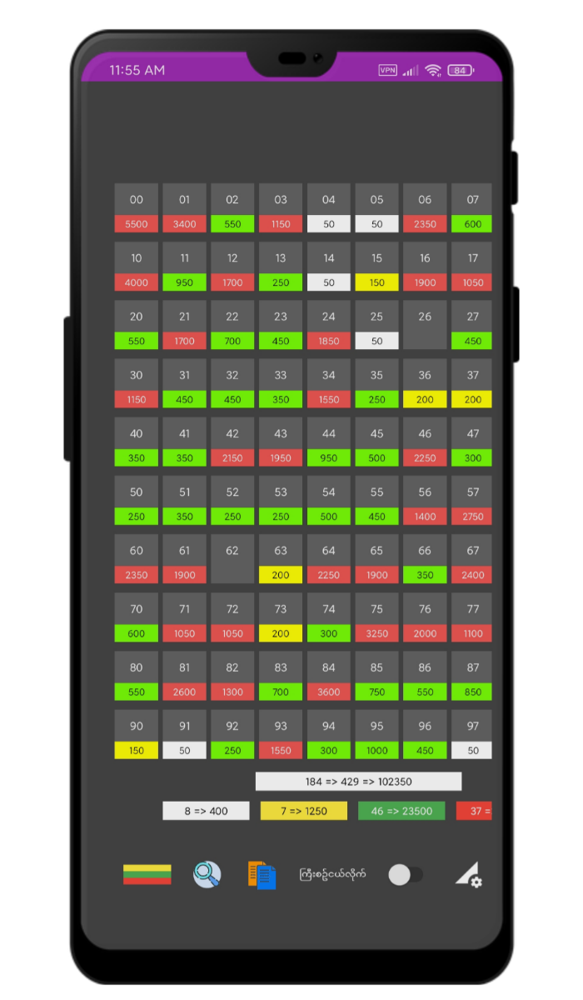

Welcome To
Twod Excel
2d ဂဏန်းတွေအတွက် စာရင်းအင်းတွေကို စာရွက်နဲ့ဘဲ ချတွက်နေရတာ အဆင်မပြေဖြစ်နေပြီလား။ Computer ရှိပေမဲ့ ဒိုင်Applicationကိုသုံးပြီး အလုပ်လုပ်ဖို့ လျှပ်စစ်မီး ပုံမှန်မလာတာကြောင့် အဆင်မပြေဖြစ်နေပြီလား။ ဒိုင်Softwareတစ်ခု အသုံးပြုနိုင်ဖို့ စျေးကြီးကြီးပေးဝယ်နေရမှာမလို့ အဆင်မပြေဖြစ်နေပြီလား။
ဒီလိုဆိုရင်တော့ Twod Excel Pro ဆော့ဝဲလ်လေးက ကူညီပေးပါလိမ့်မည်။အောက်မှာ ယခုပဲဒေါင်းပြီး စမ်းသုံးကြည့်နိုင်ပါပြီမိတ်ဆွေ။

Video Guide Intro:
Computer ပေါ်တွင်တင်သုံးနည်း -
Phone App ဖြစ်သောကြောင့် Computerပေါ်တွင် တိုက်ရိုက်သုံး၍တော့မရနိုင်ပါ။
Emulator Software တစ်ခုခုကို ကြားခံ၍ဆက်လက်အသုံးပြုနိုင်မှာဖြစ်ပါတယ်။
Video Guide ကြည့်ရန်နှိပ်ပါ။ (VPN လို)
Phone App ဖြစ်သောကြောင့် Computerပေါ်တွင် တိုက်ရိုက်သုံး၍တော့မရနိုင်ပါ။
Emulator Software တစ်ခုခုကို ကြားခံ၍ဆက်လက်အသုံးပြုနိုင်မှာဖြစ်ပါတယ်။
Video Guide ကြည့်ရန်နှိပ်ပါ။ (VPN လို)
 3D Note Pro (ကြော်ငြာ) -
3D Note Pro (ကြော်ငြာ) - 3d ဂဏန်းများအတွက် စာရင်းအင်းများပြုလုပ်ရန် အသုံးပြုနိုင်ပါတယ်။
Twod Excel App ကဲ့သို့ လွယ်ကူပေါ့ပါးစွာ အသုံးပြုနိုင်မှာဖြစ်ပါတယ်။
ဆက်လက်လေ့လာကြည့်ရန် နှိပ်ပါ။ (VPN လို)
App Features:
🎪 TWOD EXCEL App Software လေးမှာ အောက်ပါအတိုင်းအသုံးဝင်သော Feature များပါဝင်ပါတယ်...🎲 ကော်မရှင်စား အနေနဲ့ရော၊ ဒိုင်အနေနဲ့ပါ အလုပ်လုပ်နိုင်ပါတယ်
🎲 ဒိုင်များမှ အရောင်းကိုယ်စားလှယ်ဆီမှ အရောင်း စာရင်း Data များကို Messenger or Sms တို့မှ တစ်ဆင့်လက်ခံနိုင်သောကြောင့် ဒိုင်များအတွက် အလုပ်ရှုပ် သက်သာစေပါသည်
🎲 ယခု Excel Pro Version 2 မှာဆိုရင် Twod wifi app ဖြင့် ဖုန်းများကို hopspot ဖြင့် ချိတ်ဆက်ပြီး စာရင်းဖြည့်နိုင်အောင် ဖန်တီးပေးထားပါတယ်
🎲 တစ်နေ့ကို ၈ ကြိမ်အထိ အလုပ်လုပ်နိုင်ပါတယ် (တစ်နေ့ကိုစာရင်းများများ ပြုလုပ်သူအတွက်ပိုအဆင်ပြေစေပါတယ်)
🎲 စာရင်းများသွင်းဖို့ ထိုးနည်း ၁၈ နည်းကို ထောက်ပံ့ ပေးထားပါတယ်
🎲 ရက်စွဲ အလိုက်ဖန်တီးထားသော Project များကို Auto Save ထားပေးသလို Application မရှိရင်တောင် Data များက ပျက်သွားမှာ မဟုတ်ပါဘူး...
🎲 ဖုန်း id နည်းစနစ်ကိုသုံးထားတာဖြစ်လို့ vip ဝယ်ယူထားလျှင် ဖုန်းမပျက်မချင်း၊Reset မကျမချင်း Vip user auto အနေနဲ့ပြန်သုံးလို့ရနေမှာပါ။
🎲 Application သုံးဖို့ အင်တာနက် မလိုပါ (vip member စစ်ချိန်သာ လိုအပ်သည်)
🎲 ဂဏန်းများ၏ Amount တန်ဖိုးပမာဏကို ကြီးစဥ်ငယ်လိုက် ကြည့်နိုင်မည်။
🎲 Amount တန်ဖိုးများကို လွယ်ကူစွာ Highlights လုပ်ပေးနိုင်ပါတယ်။
🎲 ဂဏန်းများ၏ Amount တန်ဖိုးပမာဏကို ကြီးစဥ်ငယ်လိုက် ကြည့်နိုင်မည်။
🎲 ဂဏန်း Amount တန်ဖိုးများကို လွယ်ကူစွာ ကာနိုင်ပါတယ်။
🎲 ဒိုင်ဘက်မှာ ဆိုရင်လည်း Agent name များကို လူအကန့်အသတ်မရှိထားနိုင်ပါတယ်။
🎲 ကိုယ်စားလှယ်များ အားလုံးမှ ပို့ပေးသော data များ၏ စာရင်းပေါင်းချူပ်အနေနဲ့လည်း ကြည့်နိင်ပါမယ်.။
🎲 ပေါက်ဂဏန်းထည့်ပြီး ဘယ်သူတွေ ပေါက်လဲ ရှာလို့ရပါတယ်။
🎲 amount တူသော ထိုးဂဏန်းများကို တစ်ကွက်ချင်းရိုက်စရာမလိုဘဲ အစဥ်လိုက် တစ်ခါတည်း ထည့်သွင်းနိုင်သောကြောင့် အချိန်ကုန်သက်သာပြီး အလုပ်ပိုထိရောက်စေပါတယ်။
🎲 စာရင်းများထည့်နေချိန်တွင် ကူလုပ်ခိုင်းလို့ရပါတယ်။
🎲 Computer များကဲ့သို့ ဖုန်းတစ်လုံးကို Sever အထိုင်တစ်လုံးထားပြီး ကျန်တဲ့ ဖုန်းများက ဝိုင်းဖြည့်လို့ရပါတယ်
🎲 စာရင်းထည့်နေစဥ်အတောအတွင်း လျှံဂဏန်းများကို အပြင်ကနေ ကြည့်ရှုနိုင်သလို amount ကျော်နေသော စာရင်းများ ထည့်မိသွားရင်လည်း Dialog Box ကျလာပါလိမ့်မည်။
🎲 Android Phone,Tablet, Computer တွေပေါ်မှာ တစ်ခါတည်း တင်သုံးနိုင်ပါတယ်။
2D စားရင်းကိုင်appအတွက် Vip သုံးစွဲရန်ကျသင့်ငွေများ -
- ခုမှစသုံးမည့် သူများအတွက် တစ်ပတ်စာ စမ်းသုံးခွင့် = 💰5000ks- လစဥ်ကြေး Plan များဖြင့် အသုံးပြုချင်သူများအတွက် = 💰12000ks (တစ်လစာအတွက်ဆိုလျှင် = 15000ks)
- တစ်သက်စာ အပိုင်စနစ် ဝယ်ယူချင်သူများအတွက် = 💰100000ks (11 လပိုင်းမကုန်ခင်အထိသာ)
2D စားရင်းကိုင်appအတွက် Deviceပြောင်းခ ကျသင့်ငွေများ -
- လစဥ်ကြေးသုံးထားသူများ စက်ပြောင်း ID Change ချင်ပါက = 💰 4000ks- အပိုင်စနစ်ဝယ်ထားသူများ စက်ပြောင်း ID Change ချင်ပါက = 💰 10000ks
(ဖုန်းနဲ့ Software မကိုက်ညီမူများ ရှိခဲ့၍ ID ပြောင်းရခြင်းများအတွက်ကတော့ အလကားကူညီပေးလျက်ရှိပါသည်)
Thanks All My Users